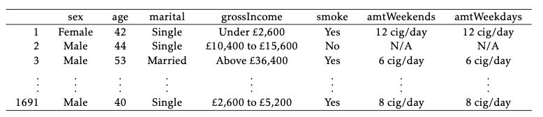
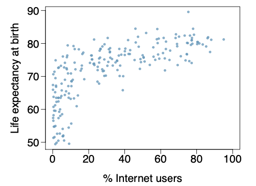
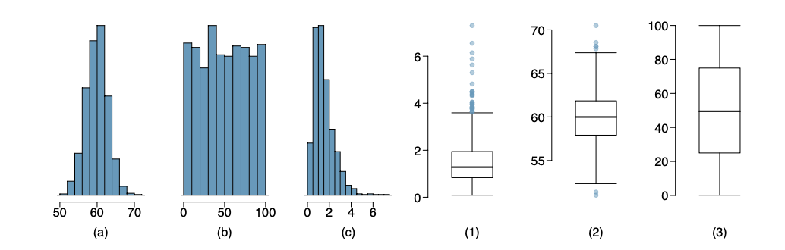
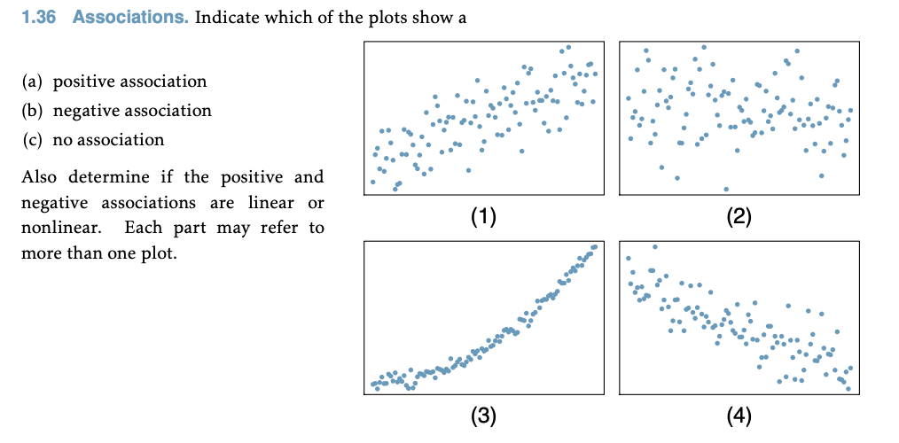
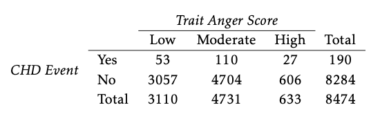

data(frog, package = 'oibiostat')
?oibiostat::frogHomework 2: Descriptive statistics
Instructions: type up your answers and submit your work electronically via Gradescope. Questions with a learning outcome indicated in brackets will be evaluated for credit; other questions are provided for additional practice. You are expected to answer all questions. Note that an R project with datasets and prompts is provided on the class posit.cloud workspace. Please do not submit R codes; show only output or graphics relevant to answering the question.
- [L3] The
oibiostat::frogdataset contains measurements on samples of frog egg clutches collected at various study sites in early 2013 to investigate the effect of altitude on relative investment in egg size versus clutch size (number of eggs). Visualize the frequency distributions of clutch volume, egg size, and clutch size. For each variable, describe the shape and modality of the distribution and calculate appropriate measures of spread and center.
Vu and Harrington exercise 1.8. Below are some observations from a study collecting data to analyze smoking habits of UK residents. 
- What does each row of this table represent?
- How many participants were included in the study?
- For each variable, indicate whether it is numerical or categorical. If numerical, indicate whether it is continuous or discrete; if categorical, indicate if it is nominal or ordinal.
[L2] Vu and Harrington exercise 1.17. The following scatterplot shows life expectancies and percentages of internet users for 208 countries. 
- Describe the relationship between life expectancy and percentage of internet users. Specifically: is there an apparent association, and if so, is it positive or negative and linear or nonlinear?
- State a possible confounding variable that might explain this relationship and describe how the confounder might relate to both the percentage of internet users and the life expectancy of a country.
- Are these data experimental or observational? And if you had to guess, were they obtained by a random or nonrandom sample, and why?
Vu and Harrington exercise 1.28. For each of the distributions (a), (b), and (c), describe the shape and modality and identify the matching boxplot from (1), (2), and (3). 
Vu and Harrington exercise 1.36. 
[L3] The
oibiostat::yrbssdataset contains measurements on a small collection of variables from 13,583 survey responses collected as part of the CDC’s Youth Risk Behavior Surveillance System (YRBSS) from 1991-2013. The objective of the survey program is to track behaviors with potential negative physical and mental health impacts among adolescents.
data(yrbss, package = 'oibiostat')
?oibiostat::yrbssa. Summarize the racial composition of survey respondents by academic grade. Produce both a contingency table and a proportional bar plot. Make sure to choose the correct (row or column) normalization for your bar plot so that it shows the racial composition by grade (not the grade composition by race). Are there apparent differences in racial composition across grades?
b. Make a bar plot showing the frequency distribution of hours of sleep on school nights. Based on the summary, what is the typical amount of sleep respondents get on school nights?
c. Produce a tabular or graphical summary that addresses the question: do older students sleep more on school nights than younger students?
d. Visualize the frequency distribution of the number of days per week that survey participants are physically active. Describe the distribution and indicate whether the variable is discrete or continuous. Is the mean an appropriate measure of center for this data? Why or why not?
e. Produce side-by-side boxplots visualizing the number of days per week that survey participants are physically active *by grade*. Based on the graphical summary, do there appear to be differences in physical activity by grade? Explain.[L3] Vu and Harrington exercise 1.39. Trait anger is defined as a relatively stable personality trait that is manifested in the frequency, intensity, and duration of feelings associated with anger. People with high trait anger have rage and fury more often, more intensely, and with long-laster episodes than people with low trait anger. It is thought that people with high trait anger might be particularly susceptible to coronary heart disease; 12,986 participants were recruited for a study examining this hypothesis. Participants were followed for five years. The following table shows data for the participants identified as having normal blood pressure (normotensives). 
- What percentage of participants have moderate anger scores?
- What percentage of participants who experienced a CHD event have moderate anger scores?
- What percentage of participants with high trait anger scores experienced a CHD event?
- What percentage of participants with low trait anger scores experienced a CHD event?
- What is the ratio of the percentages in (c) and (d)? (This is called a “relative risk” of CHD events.) Based on this, does it appear that the risk of a CHD event is higher in the high trait anger group?
- Produce a proportional bar plot that substantiates your answer in (e).
STAT218 - Homework 2: Descriptive statistics STAT218 - Homework 2: Descriptive statistics STAT218 - Homework 2: Descriptive statistics STAT218